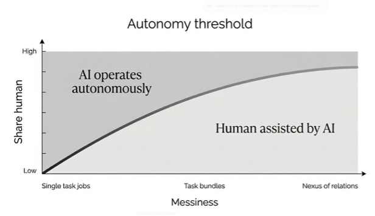

In January 2026, a student approached one of us claiming that with the help of new AI tools, she could do the whole PhD in ten days instead of four years. She had a point. Tools such as Claude Code allow a researcher to task a set of AI agents with downloading the data, finding the relevant literature, conducting the statistical analysis, crafting a formal model, and even writing the full paper. If all we wanted was to produce a standard piece of work, the student would be mostly right.4
But presumably, the student wants to obtain a PhD in order to advance science as much as possible with the given tools and, no less, to later have a good job. If the tool makes competent performance easier, more people can do the work, and the effective supply of labor increases. So the question for our student is not just whether she becomes more productive. It is what remains scarce after everyone has the same tool.
There is a crucial difference between productivity and wages, and that difference is driven by scarcity. Different previous waves of technological change created different scarcities and can help us understand what is coming.
Two precedents
Industrial revolution: technology lifts everyone (eventually)
Before the Industrial Revolution, apprentice weavers would spend years learning their trade. A master transferred skills over a decade of training. The best clothes would sell at high prices, because few people could produce that level of quality. Skill and experience were scarce.
Then machines arrived. The Edmund Cartwright power loom, invented in 1784 and widely adopted by the 1830s, meant that a teenager could learn to handle the loom in days and produce in a day a volume of cloth that would have required weeks from a master artisan. The skilled Lancashire weavers faced ruin as their cumulative experience became almost useless.5
However, after a period of stagnating wages that lasted roughly sixty years from about 1790 to 1850, something unexpected happened that pessimistic observers like Friedrich Engels and Karl Marx had not predicted: the sons and grandchildren of the weavers did not remain poor. By the end of the nineteenth century, the real income of most workers had doubled. An unqualified worker of 1900 had much more purchasing power than a qualified artisan of 1800. Machines made workers\' lives better.6
How did this happen? As the number of machines per worker grew, each worker could produce more cloth. The machine could do the heavy work, but the worker remained necessary. Somebody had to put the cotton in and make sure the machine continued operating. The worker was complementary to the machine.
And why did workers rather than capital owners capture the gains? Institutions played an important role.7 But the relative scarcity of capital and workers was critical. While the supply of workers was limited, capital, in the form of machines and factories, could be built and reproduced. With enough time and money, anybody can make another factory, another textile mill. As the earnings of capitalists went up, investors built more capital equipment, and competition persisted until returns to capital went back to normal. Workers were the scarce factor. Hence, workers, eventually, gained.
IT revolution: technology helps the more skilled
Compare this to the information technology (IT) revolution. From the introduction of mass-produced personal computers like the Apple II in 1977 and the IBM PC in 1981, computers spread into factories and offices. Like the mechanical loom, they automated work that previously required human skill. But their impact on wages was very different. From 1980 to 2020, in the United States, the salaries of graduates increased by 60 percent in real terms, while the salaries of workers with secondary education barely increased. The earnings gap between skilled and unskilled workers, what economists call the \“skill premium,\“ doubled.8
Why did the IT revolution not follow the same pattern as the Industrial Revolution? Because the IT revolution generated a different kind of scarcity. The mechanical loom complemented all workers. Anybody could learn to use it in a few days. Computers helped skilled workers more than unskilled workers. To use a database or analytical software, you need high cognitive skills.
Computers made knowledge acquisition cheap, while leaving knowledge utilization, the hard work of applying knowledge to solving real problems, entirely in human hands. The result was that computers amplified the people who could think. A financial analyst with a spreadsheet was worth far more than an analyst without one, but only to the analyst who knew what to model. A lawyer with a database of case law could research faster, but this helped only the lawyer who knew which precedents mattered. Technology complemented intelligence and hence the workers who gained more from it were those who already had it.
The consequence was that the labor market was divided by information technology. The relative demand for workers with high skills, those who could use computers as tools, went up. The relative demand for the office workers, accountants, and administrative assistants whose routine cognitive work was substituted by computers dropped. The relative demand for workers at the very base of the distribution, those doing physical labor that computers could not touch --- janitors, health assistants, and restaurant workers, did not decrease. The result was polarization.9
The two revolutions led to two different outcomes. The Industrial Revolution was, eventually, good for all workers because all workers complemented machines. The IT revolution was very good for some workers, far less good for many others, because only skilled workers complemented computers. Our time became an era of polarization.
Which precedent is more relevant to the AI revolution? If AI is like the power loom, complementing everyone, then after a painful transition, broadly shared prosperity follows. If AI is like the personal computer, complementing only those who already have scarce skills, then polarization deepens.
But the AI revolution creates a third possibility. While IT cheapened codifiable information processing but required human cognition to operate it, AI can perform many codifiable cognitive tasks by itself. That makes some forms of cognition abundant and shifts scarcity towards other human traits.
To understand this new technology, we propose a new framework. Central to this framework is the concept of the autonomy threshold.
Autonomy threshold
Adaptive cruise control helps you drive. It adjusts your speed to match traffic, maintains safe distances, and handles acceleration and braking. It makes you a better and safer driver. But it changes relatively little economically because you remain in the driver's seat. Your time is still the limit on how much driving gets done.
A fully autonomous vehicle transforms the economics entirely. Because the car no longer needs a human, the supply of \“driving services\“ is no longer limited by human time but only by machine capacity.
The boundary between the two is the point at which AI switches from assisting humans to operating alone. To be precise, the point at which AI can deliver a finished output whose quality, at the given cost, makes hiring a human to check, correct, or own the result too expensive.10 This boundary is what we in this book will call the “autonomy threshold.11“
The autonomy threshold applies to tasks, not to workers. Workers do many jobs, and jobs contain many tasks. A worker's exposure depends on how many of the tasks she is paid for cross the autonomy threshold, and on whether the remaining tasks can be cleanly separated or whether the bundle they form is “strong“, as we shall define in Chapter 3.
Below the threshold, AI is in “assistance“ mode. It helps humans, but the technology preserves them as the suppliers of the finished product. The human reviews the work, catches errors, and takes responsibility for the outcome. In this mode, the economics look much like the IT revolution. Employers need fewer hours of human time per unit of output, but the output expands to fill the freed capacity. The analyst who once wrote two reports a week now writes many more.
But when AI crosses the autonomy threshold, that is, when it can deliver a finished solution without a human checking and owning the outcome, everything changes. Below the threshold, AI complements humans. Above it, AI can replace humans on that task.
Even when this is the case, it does not necessarily replace the whole job or the whole worker. A doctor may not be writing any longer her clinical notes, and yet continue doing the rest of the tasks of the job. In this case, AI can be a substitute at the task level while increasing the worker's productivity.
Three tiers of the autonomy threshold
Every job sits at a different point on the messiness spectrum, depending on the autonomy thresholds of its component tasks and the cost of separating them. A job whose threshold is low, such as a single, well-defined, verifiable task, falls to AI early. A job whose threshold is high, for instance a tangle of interdependent tasks involving people, politics, and friction, resists automation even when the technology improves enormously. The question for any worker is: how high is the threshold of my job, and how fast is the technology climbing toward it?
Two things make a job messy. First, the tasks that compose it can be entangled and hard to separate. This could be because partial outputs are difficult to verify, because reallocating components is costly, or because significant spillovers run across tasks. Second, the job can require holding together a tangled nexus of human relationships. This inevitably involves managing conflict, mediating opposing interests, and navigating the fact that the people involved have lives, moods, and agendas of their own (as in our parenting example from the preface). This second source of messiness is far harder to automate, as we shall discuss.
The following figure describes conceptually the relationship between automation and messiness. On the horizontal axes we plot increasing messiness. In the vertical axes we plot how easy it is for AI to operate autonomously on the job. The curve depicts the increasing “autonomy threshold“ as messiness increases: autonomous AI becomes less likely to replace a job as we move from clean, single task jobs (which we call “Tier 1 jobs“) to messy bundles of tasks (Tier 2 jobs“), to nexus of human relationships (“Tier 3 jobs“).

Tier One: single-task jobs
At the left of the figure are the jobs that consist of a single task or a narrow cluster of closely related tasks with verifiable outputs: technical translations, coding a predefined problem, classifying images, and drafting a contractual clause. These are clean problems: they have clear inputs, well-defined success criteria, and verifiable outputs.
For these jobs, the autonomy threshold is low. AI is crossing or has already crossed the threshold for some of them. The system can train on correct answers, measure its own performance, and improve. Once the threshold is crossed, the human has little to sell. For instance, Demirci, Hannane, and Zhu (2025) found that job posts for writing and coding on a major freelancing platform fell by 21 percent relative to manual-intensive jobs within eight months of ChatGPT\'s launch.12 That does not, however, mean human income in the sector necessarily goes to zero, as we will see.
Tier Two: bundles of tasks
In the second tier are the jobs that consist of multiple tasks bundled together inside a single role. A medical doctor does not just diagnose illnesses. She also triages, communicates with patients, consults with colleagues, trains residents, and bears legal responsibility for diagnosis. AI may cross the autonomy threshold for some diagnosis tests while remaining below it for the other tasks in the bundle.
In tier two, the autonomy threshold for the whole job is much higher than the threshold for any individual task within it. All the tasks in the bundle require knowledge. Some tasks, such as diagnosis, only need codified knowledge, while others need contextual, interpersonal, and local knowledge. The former tasks are easy to be replaced by AI while the latter are difficult to automate.
In many instances, splitting the tasks apart would risk separating pieces of knowledge, which are all relevant to succeed at the job. The radiologist who reads the scan already knows the patient's history, already has a relationship with the referring physician, and already faces the legal obligation that goes with doing the diagnosis. Unbundling the scan-reading task and handing it to an AI would require reproducing all that context separately. This would create a coordination cost that often exceeds the savings from the unbundling.
The characteristic structure of tier two is a single human being supported by the machine, either from above or from below.13
In the “robots below“ configuration, AI takes over the routine problems of the job while the human handles the exceptions. The entrepreneur with AI tools can build a prototype in hours that used to take a team of engineers. But it is the entrepreneur who discovers the problem, creates the solution, chooses the market, and bears the risk. AI increases the leverage of human exceptional knowledge.
In the “robots above“ configuration, AI handles the more sophisticated parts of the cognitive work and deals with the exceptional problems that are unusual or hard. The nurse practitioner with AI diagnostic support still examines patients, communicates diagnoses, and deals with emotional and physical tasks. The complementarity between AI and humans in this case is the result of avoiding the human cost of acquiring medical knowledge. Training an expert is very expensive. AI allows the nurse to solve a wide range of difficult problems without having to incur the training cost.
While autonomous AI is always negative for workers who perform simple, clear (tier 1) tasks, it may help individual workers who perform a bundle of tasks. Highly trained experts may be helped when it removes some of their routine work; and less trained workers may be helped by getting access to expert cognition without needing to acquire it themselves.
Tier Three: nexus of relations
In the third tier, depicted at the right of the horizontal axes of the chart, are the jobs where the autonomy threshold is so high that almost the entire job falls below it, meaning almost all of the work requires a human to do it.
Take the head of engineering at a manufacturing plant we know very well. She must decide who to hire, which machines to buy, how to lay them down in the plant, negotiate with the workers and the higher-ups on the solutions proposed, and mobilize the resources to implement them. That task is extraordinarily hard to automate. AI might draft her reports, optimize her schedules, and analyze her data. But the reports, schedules, and data were never the hard part. A lot of the work involves managing friction with other humans and institutions, such as the town hall for permits or the corporate headquarters for funding. Knowing who to ask and how to ask involves a type of tacit knowledge that is not available in the training data of the AI.
In these jobs, managing interdependencies between humans, and not just between tasks, is the main source of messiness. There must be a human being who holds together the nexus of relations together. The whole job must be performed by a human who navigates the interdependencies, manages the friction, and is accountable for the result. As the creator of Claude Code, Boris Cherney from Anthropic put it in February 2026:
> Someone has to prompt the Claudes, talk to customers, coordinate with > other teams, decide what to build next. Engineering is changing and > great engineers are more important than ever. 14
What makes tier three different is that the messiness is not a temporary limitation of the technology but a feature of the problem itself. Organizations are coalitions of people with legitimate but conflicting goals. Implementation requires political navigation and relationship management. These problems do not become cleaner when computers get faster. They are messy because the real world is messy: because people disagree, trust matters, and responsibility must inevitably fall on a human.
One might ask whether firms could reorganize to reduce the number of messy jobs they require. Chapters 6 and 7 argue that the messiness is not a design flaw but a structural feature of organizations composed of people with conflicting interests, a feature that cannot be engineered away. A nexus of relationships cannot be engineered away because it exists to minimize the costs of organization.
While this book will focus on the supply-side reasons for the autonomy threshold, there is also a demand-side limit to autonomy, related to the demand for the authenticity of “humanness“. In many jobs, the value is derived from the fact that humans perform them. We value a live concert performed by humans. Even if higher-quality music has been recorded, people want to join together in a physical location where live music is played. We study that source of “messiness“ on the demand side in Chapter 8.
The messy demand: satiation versus Jevons
The discussion above was mostly about the technology- what AI can do. Understanding the market value of workers requires understanding also the demand side. Cheap cognition reduces the cost of goods that are intensive in cognitive labor, such as software or legal documents. Many problems that would have been impossible to solve in the past become feasible and worth attacking, because the cost of trying drops.
In broad terms there are two cases. We call one the satiation case and the other the “Jevons“ scenario.
Satiation. In 1850, when darkness fell on London, the city transformed. The wealthy burned candles that cost more per hour than a laborer\'s daily wage. The poor huddled around dried plant stems dipped in animal fat that provided barely enough illumination to prevent stumbling into furniture. Then over the next century and a half, as Nobel laureate William Nordhaus documented, the cost of light fell by a factor of 40,000.15
Yet the illumination industry has completely lost its economic value. An American household spends less in real terms on illumination than a Victorian family spent in a year. Why? Humans do not demand 40,000 times more light just because it is 40,000 times cheaper. Once we have enough light to see well, we use our money to buy other things. If we may exaggerate just a little, the innovation was so successful that the sector innovated itself out of economic existence.
The same is true for agriculture. In 1900, American farms employed 40 percent of the total labor force. Since then, it has become immensely more productive. But it only employs 1.1 percent of the labor force, fewer people than the pet care sector. Human stomachs did not expand and employment collapsed even as output increased.16
This appears surprising, but it is a natural consequence of demand being “inelastic“ or consumers being close to satiation. This could well be the case with AI: the demand for goods intensive in cognition becomes inelastic. Then, those tasks that AI is automating will become economically irrelevant; humans will make their living in sectors that do not experience the impact of AI. Chapter 8 discusses these sectors, such as artisans, personal services, and musicians performing live music.
Jevons effects. This is not the only possibility. If demand is very “elastic“ so that it increases by a lot as the cost of producing cognition drops, employment in the automated sectors will increase. This is called the Jevons effect after nineteenth-century economist William Stanley Jevons. He observed that as steam engines became more efficient, total coal use did not fall, but instead it increased significantly.17
Of course, more problems worth solving does not necessarily lead to more people employed, since some of the extra problems are dealt with by the AI itself. Human employment increases only where humans remain complementary to the newly expanded ability. In other words, there is a step from Jevons for output to Jevons for employment. If the new demand falls on tasks above the autonomy threshold, AI fills it. Employment expands only where the new demand requires tasks below the threshold, that is tasks where humans remain the bottleneck.
Consider the impact of electronic spreadsheets in the early 1980s. They automated the main task of financial analysis: the calculations that took days with pencil and paper now took minutes. One would have guessed that financial analysts would have been decimated. Instead, the demand for financial analysis exploded. Firms could now model scenarios they had never bothered to consider, update forecasts weekly instead of quarterly. The spreadsheet automated the arithmetic but created enormous new demand for doing elaborate calculations and understanding what the numbers meant. The analyst was complementary to the tool. Jevons won.
Note that in both the satiation and the Jevons cases, there are jobs to do and remaining demand. In the first case, the sectors automating lose economic weight and demand moves towards the least automatable ones. We discuss this case in Chapter 8. In the second, demand grows in the sectors that enjoy the gains of automation by so much that employment increases. In the second, case expands within the sectors being automated and humans remain necessary.
Road Map
Part I moves up the messiness spectrum. We start with single-task jobs where the threshold is lowest (Chapter 2), then examine how bundling tasks into a single role raises it (Chapter 3), and how AI reshapes the knowledge hierarchy inside those bundles: from below, empowering experts (Chapter 4), and from above, empowering non-experts (Chapter 5). Part II reaches the messiest end: the organizational politics and implementation challenges that no algorithm can navigate (Chapters 6 and 7), and the demand for authentic human origin that protects jobs even when AI could technically do them (Chapter 8). Part III turns from which jobs survive to how organizations must redesign themselves when every surviving job becomes a human-AI bundle: screening workers when the old signals collapse (Chapter 9), maintaining quality when verification costs explode (Chapter 10), setting standards when the production function changes shape (Chapter 11), and rebuilding the training pipeline when apprenticeship economics break down (Chapter 12). Each chapter also derives the career implications for workers navigating these changing systems.